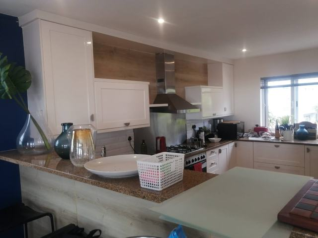
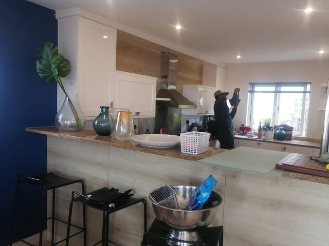
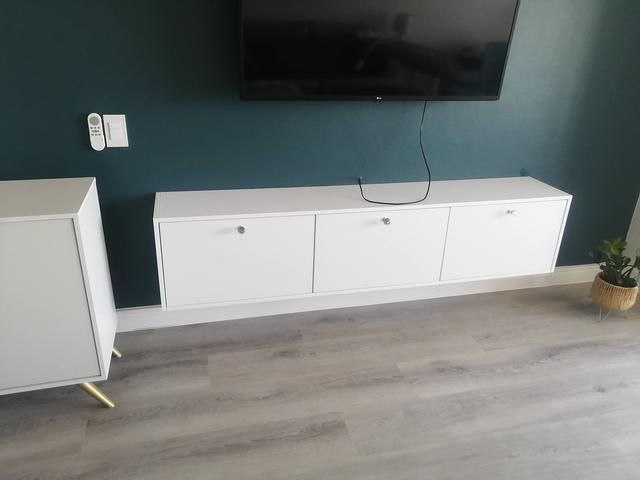
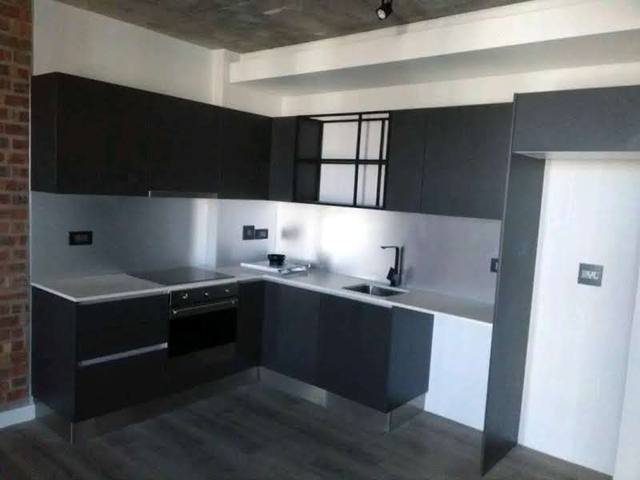

Renovation & woodworks in Green Point
Green Point is about 20 minutes from our Maitland workshop, between the city and the sea. Kitchens, cupboards, doors and renovations at a fixed price.
- ~11 km from our Maitland workshop
- ~25 min drive
- 24/7 quote requests
- Fixed price, no surprises
Homes in Green Point
Green Point is mostly apartments and townhouses close to the sea, many of them rentals. Salt air is hard on hinges, handles and outdoor timber.
What we're often asked to do in Green Point
- Apartment kitchens
- Built-in cupboards
- Rental refits with salt-air-resistant hardware
Carpentry & renovation services in Green Point
Kitchen renovations in Green Point
New kitchens and kitchen refits in Green Point: cabinets, islands, sculleries and worktops, designed around how you cook.
Built-in cupboards in Green Point
Built-in cupboards and wardrobes for Green Point homes, from single alcoves to full walls with sliding doors.
Doors, garage doors & gates in Green Point
Front doors, stable doors, security doors, aluminium and glass garage doors, and gates.
Woodwork & custom furniture in Green Point
Beds, drawers, counters, tables and commercial furniture, made in our Maitland workshop.
Pool decks & outdoor timber in Green Point
Hardwood decks, pool decks and hot-tub surrounds built for sun, water and salt air.
Fixed-price quotes, 24/7 in Green Point
Send your request day or night. Once you accept the written quote, the price doesn't change.
Our work in Green Point
Projects in Green Point first, then more examples from across Cape Town.






Our price is our price.
Fixed once you say yes. No extras.
Questions from Green Point
Do you work in Green Point?
Yes. Our workshop is in Maitland, about 11 km from Green Point (roughly 25 minutes' drive), so we can come out to measure and quote quickly.
How much does a renovation or carpentry job in Green Point cost?
Every job is priced for your space, materials and finishes. After a free site visit you get a written, itemised quote, and once you accept it the price is fixed: we never come back to ask for more.
How do I get a quote in Green Point?
WhatsApp us photos and rough measurements, any time, 24/7. We'll reply with next steps and arrange a free site visit.
Do you use finishes that cope with sea air in Green Point?
Yes. Close to the sea we use sealed edges, moisture-resistant boards and stainless or coated hardware so units last.
Not sure what you need? Ask Charles.
Send a photo of your space and Charles Zeka, with 15+ years in carpentry and renovation, will give you his honest recommendation.
Ask Charles on WhatsAppAlso near Green Point
Examples of recent work areas. We work anywhere in South Africa. All areas →